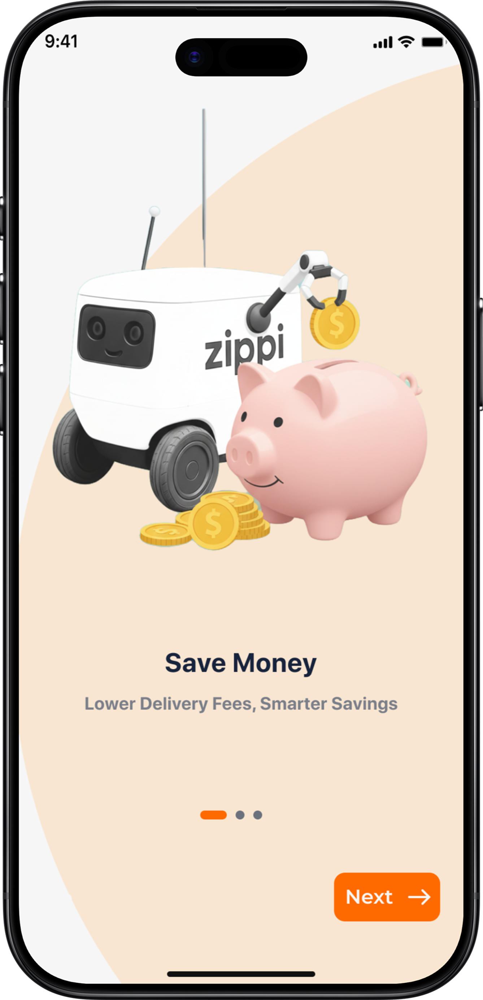

Designing a trust-first mobile experience for autonomous robot food delivery — solving user anxiety through transparency, real-time tracking, and clear handoff flows.
My Role
UX Designer
Timeline
Sep – Nov 2025
Platform
iOS Mobile App
Research
9 user interviews
The Product
Food delivery, reimagined with robots
Zippi is a delivery platform connecting senders and receivers through an automated robot-based experience. It focuses on creating a seamless, trustworthy, user-centered system — allowing users to order, track, and receive food deliveries via autonomous robots.
The technology exists. The hardware works. But the experience layer was missing — and that's what this project set out to build.
The Problem
Anxiety, not technology, is the real barrier
Users who've tried robot delivery don't abandon it because the robots fail — they abandon it because the app doesn't tell them what's happening. Frozen tracking maps, jumping ETAs, and unclear pickup instructions create anxiety that erodes trust in the whole system.
Frozen Tracking
The map would lag or freeze — leaving users unsure if the delivery was still moving.
Unreliable ETA
"Time kept jumping around; I couldn't trust it." Users lost confidence in the whole delivery.
Handoff Confusion
Robot stops at unpredictable locations. Users didn't know when or where to collect their food.
Restaurant Blind Spots
Once delivery begins, restaurant staff can't assist customers — they're locked out of the flow.
User Research
9 interviews, one clear signal: trust
A foundational research study was carried out with 9 participants aged 21–35. The goal was to explore user anxieties, expectations, and pain points specifically related to robot delivery interactions — from both the receiver and restaurant staff perspectives.
9
Participants interviewed, ages 21–35
2
User perspectives: receivers & restaurant staff
100%
Experienced anxiety from unclear robot status or ETAs
The research question: What should we build? What are the user's real problems — and how do we solve them in a way that builds genuine confidence in a new delivery paradigm?
User Personas
Two users, two very different frustrations
Mark Chen
Software Engineer, 24 · Chicago
Motivation
"I love to save money and spend later."
Goals
Food delivered to his building, not the street corner
Accurate, reliable delivery time he can actually plan around
Minimal hassle from start to finish
Frustrations
ETA "kept jumping around"
Robot stopped at the corner, not his door
Robot was "way slower" than human delivery
Daniel Ruiz
Restaurant Manager, 35 · Chicago
Motivation
"Robotics is a big step forward, but we need tighter integration."
Goals
Streamline operations and reduce third-party driver dependency
Keep customers informed throughout delivery
Ability to intervene if something goes wrong
Frustrations
No real-time notifications once delivery begins
Can't assist customers when issues arise
Feels disconnected from the delivery after dispatch
Information Architecture
A structure built around moments of uncertainty
Every screen in Zippi was designed with one question in mind: what does the user need to know right now? The IA reflects this — surfacing tracking and status information front and center, not buried under menus.
Mid-Fidelity Wireframes
Iterating before committing to pixels
Paper wireframes were drafted first, then translated to digital mid-fi wireframes. Each iteration was reviewed against the research findings — particularly the need for clear tracking, location accuracy, and proactive status communication.
Home Screen
Order Detail
Live Tracking
Final Designs
End-to-end flow — onboarding to delivery
Onboarding

Homepage & Ordering
Live Tracking
Accessibility Considerations
Designed for everyone, not just most
1
Icon + label navigation — icons are paired with text labels throughout to make navigation clear for users who may not interpret symbols intuitively.
2
Detailed imagery — visual information is never conveyed by image alone; captions and descriptions accompany all key visual content.
3
Screen reader support — alt text and ARIA descriptions were applied to all images and interactive elements throughout the app.
4
WCAG color contrast — the entire color palette was validated against WCAG contrast standards, ensuring readability across all component states.
Impact & Takeaway
Trust is a design problem
Zippi demonstrated that the barrier to robot delivery adoption isn't the technology — it's the experience layer that wraps it. Designing for moments of uncertainty — telling users what's happening before they have to wonder — is what makes autonomous delivery feel reliable and approachable.
The app makes robot delivery feel way less confusing. I like that I always know what's happening and what I'm supposed to do next. It actually feels trustworthy.